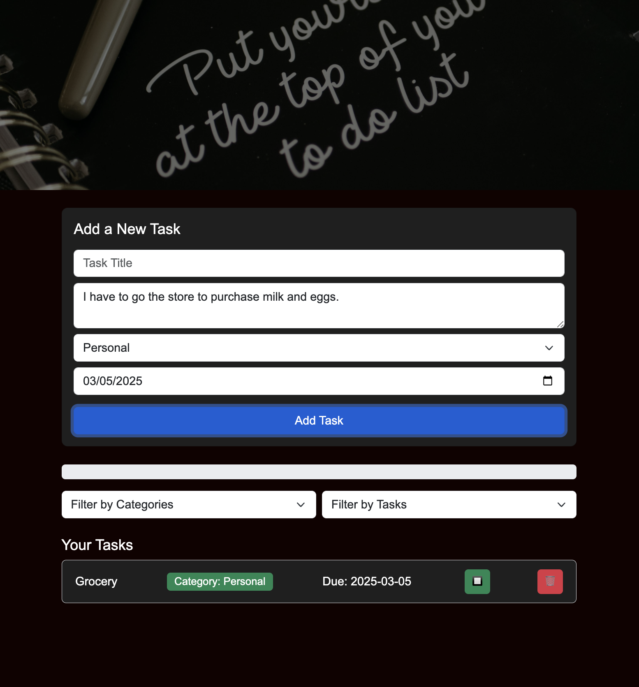

An intuitive web app for adding, editing, deleting, and categorizing tasks with persistent local storage.

📌 Overview
The Task Manager App is a simple and efficient task management tool that allows users to organize tasks with ease. Built using HTML, CSS, Bootstrap, and JavaScript, it features a user-friendly interface and local storage support for persistent task management.
✅ Features
✔ Add, edit, and delete tasks
✔ Categorize tasks (Work, Personal, Urgent, etc.)
✔ Mark tasks as completed
✔ Filter and sort tasks
✔ Persistent local storage for data retention
🚀 Future Enhancements
🔹 Drag-and-drop task reordering
🔹 Task reminders and notifications
🔹 User authentication for personalized task lists
🛠️ Technologies Used
HTML | CSS | Bootstrap | JavaScript | Local Storage
🔧 Dedicated Technology Breakdown
📌 HTML5 - Structuring the application layout.
📌 CSS3 - Enhancing UI/UX styling.
📌 Bootstrap - Ensuring a responsive and consistent design.
📌 JavaScript - Managing task interactions and local storage.